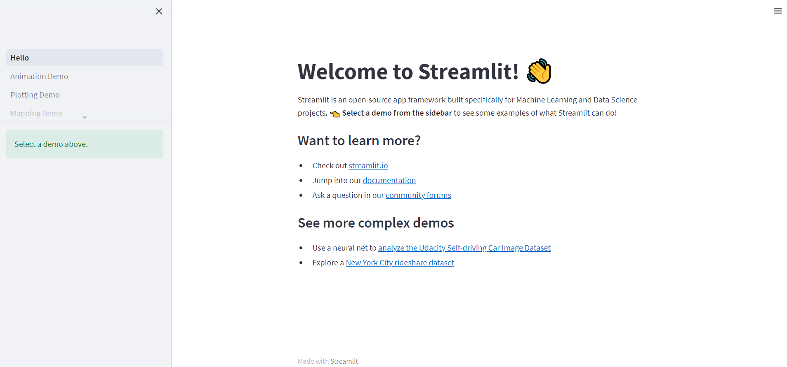
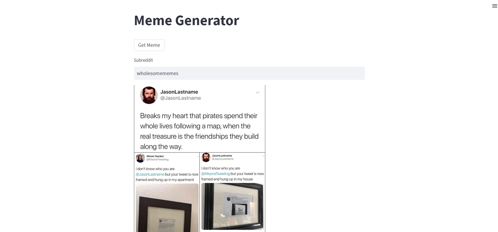

You spent some time developing a really cool function that takes some awesome inputs and spits out something amazing. Let’s call it, myAwesomeFunction. Now you want to share it with the world but creating a whole website around this is hard work. Making it pretty, figuring out the interfacing between the front-end and back-end. Where to host it? All of this takes time to learn. So what should you do. Well if you are anything like me and want to spend less than a day worrying about this, then I would say to use streamlit.io.
Streamlit is an simple python app builder. Similar to Dash by Plotly, but lighter and faster to develop with. It’s mainly meant for developing data dashboards and tools but you can extend that functionality to develop simple apps that can showcase your prototype app.
Let’s start with the basics. Make sure you Python installed (3.7–3.10), PIP, and some IDE that you like. I like to use Anaconda to setup my environments and handle my dependancies.
If you are just starting with conda environments, then I suggest following this article by Swati Kanchan. And then to install Streamlit type the following into your terminal:
$ python -m pip install -U pip
# if you are on a Mac
$ xccode-select --install
# finally to install streamlit
$ pip install streamlit
Once this is done, you can test it out and make sure it is working by typing the following code into your terminal:
$ streamlit hello

If all of this works, then you are set to start developing your basic app!
Let’s start with a Hello World. Create a file called helloWorld.py and then all you need are two lines of code:
import streamlit as st
st.title("Hello World")
Save it and type the following into your terminal to run the app:
$ streamlit run helloWorld.py
You should see a site like this:
Now this isn’t much, I know, but it has so much potential. The documentation on streamlit is well organized and is a really good resource for building your site. In fact, they even have a cheatsheet.
Let’s now add some functionality to this site. For example, we want to make a site where every time a button is clicked, a different meme from wholesome images is retrieved and displayed.
To obtain our meme, we are going to use the meme-api app by D3vd. This returns a random meme. We can even define a subreddit if we want. For now let’s use r/wholesomememes to keep everything G-rated. We can send a request and evaluate the json response to extract values like the link to the image, the title, and the author.
import json
import requests
def get_meme():
sr = 'wholesomememes'
url = 'https://meme-api.herokuapp.com/gimme/' + sr
response = json.loads(requests.request("GET", url).text)
my_meme = response["url"]
title = response["title"]
author = response["author"]
return my_meme, title, sr, author
Now we can go about and setup our web page. All we really need is a title (“Meme Generator”) and a button.
import streamlit as stst.title("Meme Generator")
st.button("Get Meme", on_click=lambda: refresh_meme)
Lastly, we need a function that runs every time our button is pressed.
from PIL import Imagedef refresh_meme():
my_meme, title, subreddit, author = get_meme()
st.image(my_meme, caption='{} by {} on r/{}'.format(title, author, subreddit), width=400)
refresh_meme() # so that it runs when you first load the page
Putting these three pieces of code together, you end up with a file like this:
import streamlit as st
import json
import requests
from PIL import Image
def get_meme():
sr = 'wholesomememes'
url = 'https://meme-api.herokuapp.com/gimme/' + sr
response = json.loads(requests.request("GET", url).text)
my_meme = response["url"]
title = response["title"]
author = response["author"]
return my_meme, title, sr, author
def refresh_meme():
my_meme, title, subreddit, author = get_meme()
st.image(my_meme, caption='{} by {} on r/{}'.format(title, author, subreddit), width=400)
def main():
st.title("Meme Generator")
st.button("Get Meme", on_click=lambda: refresh_meme)
refresh_meme()
if __name__ == '__main__':
main()
Again you can run this by typing the following into your terminal:
$ streamlit run meme_generator.py
And with that you end up with a web page that looks like this, with your own randomized meme! You can now click the ‘Get Meme’ button to your heart’s content!
We can even add a little more complexity, by giving the ability for the user to type in their own subreddit.
import streamlit as st
import json
import requests
from PIL import Image
class meme_generator:
def __init__(self):
st.title("Meme Generator")
st.button("Get Meme", on_click=lambda: self.refresh_meme)
self.text = st.text_input("Subreddit", value="wholesomememes")
self.refresh_meme()
def get_meme(self, sr='wholesomememes'):
sr = sr
url = 'https://meme-api.herokuapp.com/gimme/' + sr
response = json.loads(requests.request("GET", url).text)
my_meme = response["url"]
title = response["title"]
author = response["author"]
subreddit = response["subreddit"]
return my_meme, title, sr, author
def refresh_meme(self):
my_meme, title, subreddit, author = self.get_meme(self.text)
st.image(my_meme, caption='{} by {} on r/{}'.format(title, author, subreddit), width=400)
if __name__ == '__main__':
meme_generator()

You have a fully functional web page where you can show off your skills, and perform your functions. But how can you share this with other people?
For this Streamlit makes it extremely easy for you.
First, you need to make your app a git repository. If you are wondering how to do this, follow this tutorial by Rayaan Siddiqi.
Next, click on the menu bar in the top left of your page and click ‘Deploy this app’.
This will take you to the setup page where you have to point to the file containing your code:
And finally, click deploy! After a few seconds your app is up and running for the world to see!
If you want to see my site follow this link.
This way of making a web app definitely does not contain the complexity that a Django or flask app might. But if you are just starting out, need something quick, or don’t want to think about the front end, this is for you!